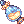

시에나의 기운 강화
Siena's Aura Simulator
증폭
능력치
추가 옵션
초기화
무기·손목
방어구
0
현재 강화 단계
부여된 능력치
0 / 10
추가 옵션
0 / 3

성공 확률
100%
자동 강화 목표
1단계
2단계
3단계
4단계
5단계
6단계
7단계
8단계
9단계
10단계
증폭 시도
자동 시작
잠금
0 / 9
자동 설정 목표
하 이상
중 이상
상
재설정 시도
자동 시작
환류의 서
정환의 서
자동 설정 목표
하 이상
중 이상
상
추옵 재설정
자동 시작
실시간 강화 대시보드
SEED
ELSO
누적 통계
누적 소비 재화 내역
강화 아이템 상세
힌덴의 가루
0
장인의 혼
0
에이라의 망치
0
환류의 서
0
정환의 서
0
강화 시도 횟수
증폭 시도
0
능력치 재설정
0
추옵 변경
0
실시간 히스토리
내역이 없습니다.
증폭 기댓값